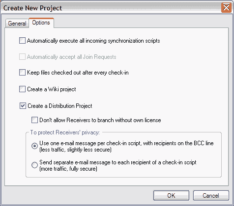

Distribution projects are useful when you are selling source code to clients. A distributon project gives you a controlled way to automatically distribute source code changes (patches) to your clients. Your clients will not be aware of each other, and they won't be able to make any changes to the project.
Here is how it works:
When you create a new project you can designate it to be a distribution project from the Options tab in the New Project dialog as shown here.

You have the option to prevent a Receiver from branching the project. You can also choose to send out one e-mail per script to all receivers in the distribution project, or you can send out individual e-mails.
You can also designate a project to be a distribution project after it has been created, although you have to be the only member of the project. To do this select Project > Options and click on the Distribution Tab. You will have the same options as you see in the above screen capture.
Go to our License page for pricing information and contact support@relisoft.com to purchase distribution licenses for your clients.